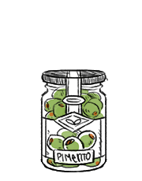

pimento olives
Pimento olives are pitted green olives with a pimento pepper stuffed inside, all preserved in oil. Pimento peppers are mild in taste.
olives
Olives come from Olea Europea, a small tree. Olives are the fruit of the olive tree. 90 percent of harvested olives are turned into olive oil, while the rest are sold as table olives. Table olives are classified into 3 groups: green olives, turning color olives (semi-ripe) and ripe olives.